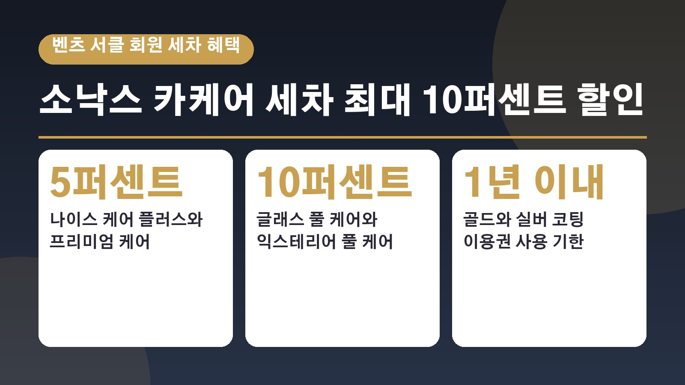
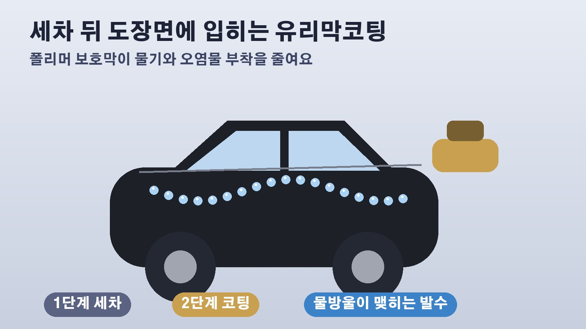

벤츠 서클 회원이면 소낙스 카케어 세차 최대 10퍼센트 할인, 세차와 유리막코팅 이용권은 칼라하리 골드와 하이테크 실버 등급만

벤츠를 타면서 세차는 늘 다니던 곳에서 하고, 멤버십 앱은 깔아만 두셨던 분들 계시죠. 10월 22일 피앤피뉴스 보도에 따르면 메르세데스 벤츠 서클 멤버십 회원이 소낙스 카케어 매장에서 쓸 수 있는 세차 할인과 세차 유리막코팅 패키지 이용권이 새로 생겼습니다. 내 등급에서 무엇을 받을 수 있는지, 어떻게 써야 하는지 차례로 정리해 볼게요.
소낙스 카케어와 벤츠 서클 제휴, 무엇이 생겼나
소낙스 카케어는 알레스가 운영하는 자동차 내외장 관리 프랜차이즈로, 독일 자동차 관리 브랜드 소낙스의 제품과 시공 방식으로 세차와 디테일링, 외장 관리를 해 주는 곳입니다. 이번 제휴는 크게 두 가지로 나뉩니다. 하나는 여러 등급 회원이 매장에서 받을 수 있는 상시 세차 할인이고, 다른 하나는 상위 일부 등급에만 주어지는 프리미엄 바우처, 즉 소낙스 세차와 유리막코팅 패키지 이용권입니다. 벤츠 차주라면 먼저 내 서클 등급이 무엇인지부터 확인하는 것이 출발점입니다.
상시 할인은 4개 등급, 세차 종류에 따라 5퍼센트와 10퍼센트
상시 할인 대상은 나이트 블랙, 칼라하리 골드, 하이테크 실버, 오팔 화이트 4개 등급입니다. 나이스 케어 플러스와 프리미엄 케어 세차는 5퍼센트, 글래스 풀 케어와 익스테리어 풀 케어 세차는 10퍼센트 할인됩니다. 쓰는 방법은 간단해요. 메르세데스 벤츠 서클 앱에서 관련 바우처를 내려받은 다음 소낙스 카케어 매장에서 보여 주면 현장에서 결제할 때 할인이 적용됩니다. 어떤 세차를 받느냐에 따라 할인 폭이 다르니, 매장에서 메뉴를 고를 때 이 구분을 같이 보시면 좋습니다.
세차와 유리막코팅 이용권은 칼라하리 골드와 하이테크 실버만
프리미엄 바우처는 칼라하리 골드와 하이테크 실버 등급 회원에게만 제공됩니다. 상시 할인 대상인 나이트 블랙과 오팔 화이트는 이번 기사에서 이용권 대상으로 소개되지 않았으니 헷갈리지 않도록 해 두세요. 대상 회원은 서클 멤버십의 라이프스타일 항목에서 소낙스 세차와 유리막코팅 패키지 이용권을 고를 수 있습니다. 패키지는 나이스 케어 플러스 세차 뒤에 유리막코팅을 입히는 구성이고, 코팅에는 독일 소낙스 제품이 쓰입니다. 도장면에 폴리머 보호막을 만들어 물기와 오염물이 덜 달라붙게 하고, 광택과 색감을 유지하는 데 초점을 맞췄다고 회사는 설명했습니다.

신청부터 예약까지, 그리고 1년 기한
이용권은 서클 앱에서 바우처를 신청하고, 발급받은 시공권을 차량 관리 예약 앱인 소낙스 체크인에 등록한 뒤 예약하는 순서로 씁니다. 가장 놓치기 쉬운 부분은 기한입니다. 프리미엄 바우처는 해당 등급에 들어간 뒤 1년 안에 신청과 이용을 모두 마쳐야 합니다. 벤츠 공식 서클 안내서에도 프리미엄 혜택은 등급 진입 후 1년 이내, 패키지별로 하나만 골라 쓸 수 있고 고른 뒤에는 바꿀 수 없다고 적혀 있어요. 그러니 다른 라이프스타일 혜택과 비교해 보고 결정하시는 편이 낫습니다.
내 등급은 어떻게 정해지나
공식 안내서에 따르면 서클 등급은 5년 동안 쌓인 차량 구매 금액, 즉 마일리지로 정해집니다. 1억 5천만원 미만은 오팔 화이트, 1억 5천만원 이상은 하이테크 실버, 3억원 이상은 칼라하리 골드, 6억원 이상은 나이트 블랙입니다. 마일리지는 2026년 1월 1일 이후 새 차를 사서 등록한 차량부터 쌓이고, 등록일로부터 6개월 안에 서클 앱에 차를 등록해야 붙습니다. 중고차 차주는 마일리지 없이 오팔 화이트 등급의 공통 혜택만 쓸 수 있다고 안내돼 있습니다. 제휴 혜택은 회사 사정에 따라 바뀔 수 있으니, 세차 예약 전에 앱에서 현재 조건을 한 번 더 확인해 보세요.
참고한 기사: 피앤피뉴스 소낙스 카케어 메르세데스 벤츠 서클 멤버십 대상 세차 유리막코팅 제휴 2026년 10월 22일, 메르세데스 벤츠 코리아 서클 앱 안내서 2026년 5월판
태그
소낙스카케어 벤츠서클 메르세데스벤츠멤버십 유리막코팅 세차할인 벤츠세차 소낙스체크인 칼라하리골드 하이테크실버 외장관리